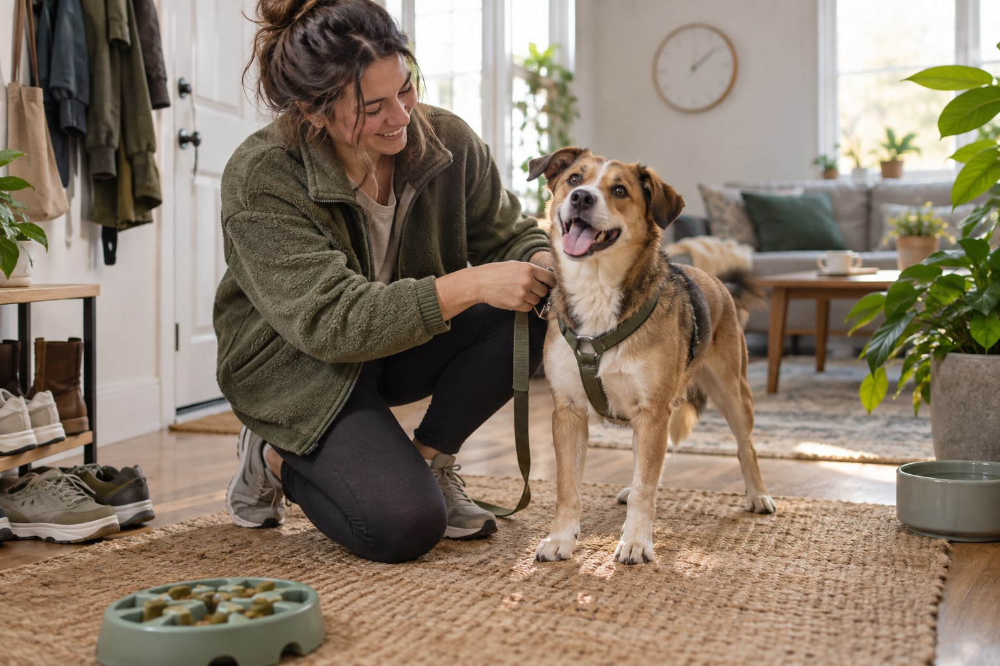

How Much Time Does a Dog Need Every Day?

The honest answer is not “two hours” or “three walks.” A dog needs a pattern of care across the day: bathroom breaks, food, movement, chances to sniff and think, brief learning, companionship and quiet rest. Some of that time overlaps with your own life. Some of it absolutely does not.
Researched by the CanMyPet Editorial Team · Published October 8, 2026 · Checked against the sources listed below.
Start with seven time blocks, not one magic number
“How much time?” is easier to answer when you stop imagining one heroic evening walk and start counting the small jobs that make up an ordinary Tuesday. A realistic plan contains seven blocks:
1. Toilet opportunities
Getting outside, waiting, cleaning up and returning home. Apartment living and elevators add minutes that a backyard can hide.
2. Meals and reset
Preparing food, refreshing water, washing bowls and using some food in a puzzle or training game.
3. Movement
Walks, play or other appropriate activity matched to the individual dog, weather and advice from your veterinarian.
4. Sniffing and thinking
Unhurried sniff time, simple searches, food toys and other enrichment that lets a dog make choices.
5. Learning
Short, positive practice woven into real life: waiting at a door, checking in, settling or walking together.
6. Social time
Play, gentle handling and shared downtime. Being nearby counts, but it cannot be the only kind of attention.
7. Care and admin
Grooming, cleaning, buying supplies, arranging sitters and keeping appointments. It is not daily, but it belongs in the budget.
The American Animal Hospital Association recommends varied enrichment that supports thinking, foraging, sensory exploration, physical activity and social interaction. That variety is why one long walk does not automatically create a complete day.
A realistic weekday budget
The table below is a planning model for an adult dog with no special care requirements. It is deliberately a range, because walking to the elevator takes longer than opening a back door, and ten engaged minutes can be more useful than forty distracted ones.
| Care block | Example caregiver time | What can overlap? |
|---|---|---|
| Morning start | 30–60 minutes | Bathroom break, breakfast, water reset, a sniffy outing and two minutes of practice can share one routine. |
| Midday break | 15–40 minutes | A household member, walker, sitter or trusted helper may cover it. |
| Evening activity | 40–90 minutes | Movement, sniffing, play and training can happen in the same outing or session. |
| Shared downtime | 30–90 minutes | Your dog can settle nearby while you read, cook or watch television, provided active needs were not skipped. |
| Micro-care | 10–25 minutes | Bowl washing, quick grooming, toy reset, cleanup and the last trip outside. |
Do not add every maximum and panic. These blocks overlap. A 25-minute walk can include sniffing, a few reward-based cues and warm social contact. Filling a food toy can happen while breakfast is being prepared. The useful question is: which needs are covered, and when is the next opportunity?
The “active time” versus “available time” distinction
Hands-on time is when you are directly walking, feeding, playing, teaching or grooming. Available time is when you can notice that the water bowl tipped over, open the door for a bathroom break or respond when your dog cannot settle. A schedule can contain enough active minutes and still fail if every minute is compressed into the edges of a twelve-hour absence.
The RSPCA says the length of time a dog can comfortably be left varies by the individual, and advises not leaving dogs alone for longer than four hours so they have opportunities for the toilet, activity and company. That is guidance from one welfare organization, not a guarantee that every dog will tolerate four hours. Build alone time gradually and arrange daytime help when your workday creates a longer gap.
How the budget changes by life stage
Puppies: more interruptions, less predictability
Puppies turn the day into many small cycles: wake, toilet, eat, play or learn, toilet again, then rest. They also need gradual practice being comfortable alone. The total is not merely “more exercise”; it is more supervision, cleanup, preparation and transitions. If everyone in the household is away for long uninterrupted stretches, arrange help before the puppy arrives. Our realistic puppy schedule shows how to organize those cycles.
Adolescents: the calendar may look adult before the behavior does
A teenage dog can be physically impressive and still need frequent guidance. Budget for short practice, constructive chewing, sniffing and recovery after exciting outings. This stage often exposes schedules that technically contain a walk but have no room for teaching everyday skills.
Adults: consistency usually beats weekend heroics
A stable adult routine is often the easiest to share across a household. Morning and evening anchors matter, but so does what happens between them. A giant Saturday adventure does not repay a week with too few bathroom breaks or too little interaction.
Seniors: protect the time, change the format
Older dogs still need engagement and companionship, though the pace and type of activity may change. Allow more transition time and follow your veterinarian's advice when health or mobility affects the routine. The goal is not to chase a younger dog's schedule; it is to keep the day accessible and interesting.
Three schedules that work in real homes
1. The full-time worker
- Before work: bathroom opportunity, breakfast, an unhurried outing and a short settle period before departure.
- Midday: household member, walker, sitter or appropriate daycare provides a break and interaction.
- After work: greeting without chaos, then movement, sniffing or play, dinner and calm time together.
- Before bed: final bathroom opportunity and a quick reset for tomorrow.
The hidden requirement is backup. Meetings run late, trains stop and weather changes. Put a second caregiver and their contact details into the plan before the first emergency workday.
2. The work-from-home household
Proximity is helpful, but a dog sleeping under a desk for eight hours has not automatically had a rich day. Use calendar anchors: a real morning outing, a short midday break and an end-of-work transition. Also preserve calm independent time so constant company does not become the only routine the dog knows.
3. The shared-care household
Split responsibility by named blocks, not vague promises. “Sam does the morning outing; Jo handles dinner and the last trip; Alex covers Tuesday and Thursday midday” is dependable. “Everyone helps” often means nobody knows whether the dog has eaten.
Do the seven-day honesty audit
Before getting a dog — or when your current routine feels strained — track one ordinary week. Do not use your ideal schedule. Record what actually happens.
- Write down the start and end time of each care block.
- Mark who handled it, including paid help.
- Separate direct activity from passive company.
- Note the longest uninterrupted absence.
- Add the invisible weekly time: shopping, laundry, grooming, cleaning, appointments and travel.
- Circle the block most likely to fail on a busy day.
- Create a backup for that block.
At the end, ask whether the pattern is sustainable in bad weather, during a deadline and when one caregiver is unavailable. A plan that works only on your best day is not yet a plan.
Signs the schedule needs redesigning
Look for patterns, not a single mischievous afternoon. Repeated boredom-driven destruction, frantic greetings, difficulty settling, frequent missed bathroom opportunities or a routine that depends on daily guilt all deserve attention. First check whether the basics are consistently available. Then adjust the day with more appropriate breaks, enrichment, training support or caregiving help.
Behavior changes can also have health causes. If a change is sudden, intense or persistent, contact your veterinarian rather than assuming the dog simply needs a longer walk.
Where busy owners save time without shortchanging the dog
- Stack useful activities: practice check-ins and loose-leash skills during a normal outing.
- Prepare once: portion meals, load food toys and stage walking gear in batches.
- Use tiny sessions: two focused minutes of reward-based learning can fit before the kettle boils.
- Rotate, do not accumulate: keep a few safe enrichment options available and switch them regularly.
- Buy help where the gap is: one dependable midday visit may improve the entire weekday more than another box of toys.
- Use a shared calendar: our free pet care calendar makes responsibility visible.
The commitment test before you get a dog
For seven days, rehearse the schedule without the dog. Go outside at the planned morning time. Take the midday break. Reserve the evening block. Price the walker or sitter you would use. If the rehearsal repeatedly fails, change the plan, the type of pet you are considering or the timing of adoption. That is responsible matching, not failure.
The AVMA reminds prospective owners that feeding, grooming, activity, play and elimination are daily responsibilities throughout a dog's life. The most loving time estimate is therefore not the biggest number you can promise today; it is the routine your household can keep for years.
Frequently asked questions
How many hours a day should I spend with my dog?
There is no single number for every dog. Plan several care blocks across the day for bathroom opportunities, meals, movement, sniffing or play, short training, companionship and household care. The right total depends on age, personality, health and the support available in your household.
Does sitting in the same room count as time with my dog?
Calm companionship can be valuable, but it does not replace active care. A balanced day includes both shared downtime and intentional activities such as walking, sniffing, play, training or grooming.
Can a full-time worker have a dog?
Yes, if the daily plan is realistic. Many working households share duties or arrange a dog walker, sitter, trusted neighbor or appropriate daycare so the dog receives breaks, activity and company during long workdays.
Is one long walk enough?
Not by itself. A walk may cover movement, sniffing, training and social time, but dogs also need bathroom opportunities, meals, water, rest, care and appropriate contact spread across the day.
Sources
- American Animal Hospital Association — Enrichment: Supporting Your Pet's Mental and Emotional Wellbeing at Home (2026)
- American Animal Hospital Association — Who's a Good Dog? 5 Expert Dog Training Tips
- RSPCA — How to Train Your Dog to Stay Home Alone
- American Veterinary Medical Association — Selecting a Dog
- Frontiers in Veterinary Science — The Interplay Between Affect, Dog's Physical Activity and Dog-Owner Relationship (2021)
For general planning information only. This guide does not prescribe exercise or replace advice from your veterinarian or a qualified behavior professional.